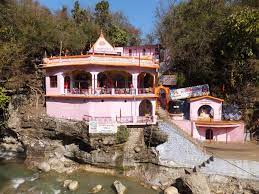

|  |
| Tapkeshwar is a famous holy cave temple of Lord Shiva on the bank of a rivulet. The water further flows in to
the cave to drip on to the Shiv Linga inside. Sulphur springs present around the temple makes for a therapeutic bath. This cave was once the abode of the famous guru Dronacharya and hence is also known as Drona cave. Tapkeshwar is known to have one of the oldest Shivling in the cave. As water droplets continuously drops on the shivling, hence it was named as 'Tapkeshwar'. |